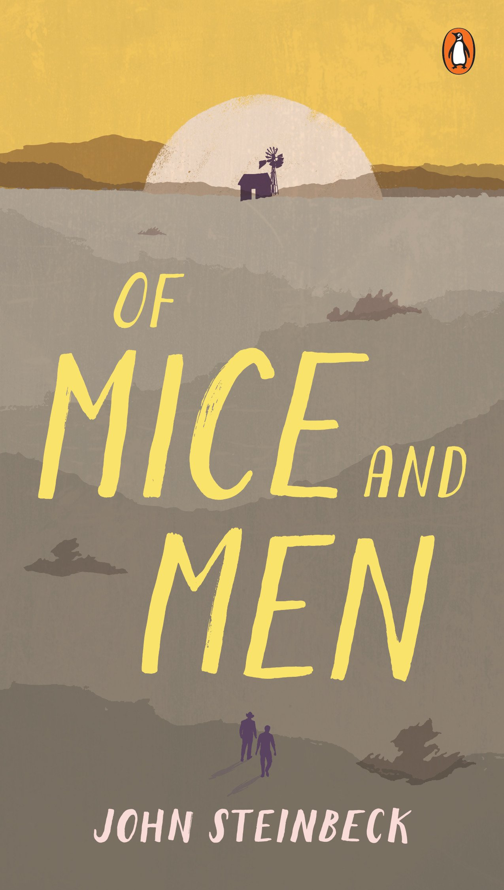

home | en
three sentence book reviews
| I asked my librarian for a book about friendship and she recommended this one. But are Lennie and George even friends? Lennie just kind of puts up with George. |  |
| Leovy’s nonfiction account of a murder in L.A. reads like a detective novel. She cuts through the politics to present one way to reduce black-on-black violence: more thorough investigations. Very well-researched, very emotional, and deeply concerned with preserving black lives. |

|
| Too deep for me. I liked the part about the “noble lie” though. It made me think about how/why we build inviolable bedrocks of self-worth with stuff like unconditional love or racial superiority. |

|
| Very cute drawings. Lovely story. Probably deep, but over my head. | |
| I love that Snicket doesn’t shy away from showing death. He says losing someone is like walking up some stairs, expecting one more step, and then feeling a jolt when your foot keeps falling. I doubt many children’s novels should address death as honestly and sensitively as this one. |

|
| It’s hard to find science writing that's a little meatier than pop science but doesn't feel like homework. I think Greene nails it here. His use of accessible analogies and detailed footnotes makes the book easy to pick up without being too hand-wavey. |

|
| I'll always roll my eyes at writers who insist that their names be lowercase (that includes bell hooks). But danah boyd offers a smart, nuanced look at how teenagers use social media. She cuts through parental bogeymen and media hype to show how Instagram of the 2010s is the mall of the 1980s. |

|
| Black Africans and black Americans have very different histories and cultures. Wamba, the son of an African dad and American mom, tries to bridge the gap. I don’t think he succeeds. |

|
| Coates writes beautifully. But he’s too cynical. Blackness doesn’t mean relentless struggle against oppression. | |
| Finally! A clean description of populism: an aesthetic wrapper around a given ideology delineating a morally pure people and a corrupt elite. Mudde and Kaltwasser give detailed examples from around the globe to develop a clear definition. |

|
| Villani does a great job of showing how math is like poetry, and crucially, how math is not like poetry. It’s easy to get lost in important sounding vagaries when talking about math. But Villani is precise and develops a compelling analogy. |

|